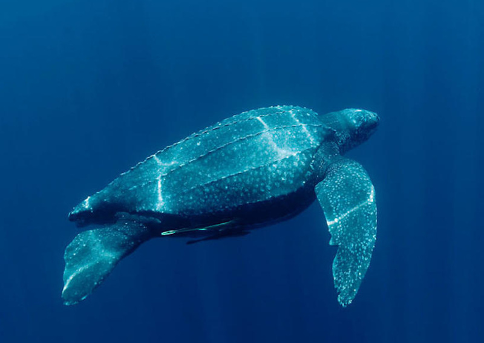
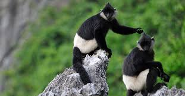

Danh sách các loài động vật đang bị đe dọa tại Việt Nam và cần sự chung tay bảo vệ từ cộng đồng.
Danh Sách Động Vật
Hươu vàng
Hươu vàng, một loài động vật có vú thuộc họ Hươu nai, được mô tả bởi Zimmermann vào năm 1780.
Hươu vàng sinh sống chủ yếu ở các khu rừng rậm nhiệt đới ở Tây Nguyên, Việt Nam. Chúng có bộ lông vàng óng đặc trưng, sừng nhỏ và nhọn. Là loài ăn cỏ hiền lành, hươu vàng đóng vai trò quan trọng trong hệ sinh thái rừng, giúp phát tán hạt giống. Tuy nhiên, do nạn săn bắt trái phép và mất môi trường sống, số lượng của chúng giảm sút nghiêm trọng và có nguy cơ tuyệt chủng trong tự nhiên.
Voi
Voi Việt Nam, quần thể voi gắn bó với đời sống, lịch sử và văn hóa.
Voi Việt Nam thuộc nhóm voi châu Á (Elephas maximus), là biểu tượng của sự mạnh mẽ, thông minh. Voi có trí nhớ tuyệt vời, sống theo bầy đàn và có quan hệ xã hội phức tạp. Chúng giúp duy trì sự cân bằng sinh thái rừng, tuy nhiên hiện nay quần thể voi Việt Nam đã giảm mạnh do nạn săn trộm ngà và xung đột với con người. Các chương trình bảo tồn voi và nâng cao nhận thức cộng đồng là hết sức cần thiết.
Voọc đầu trắng
Trên toàn cầu chỉ còn khoảng 60 cá thể Voọc đầu trắng sinh sống.
Voọc đầu trắng (Trachypithecus poliocephalus) hiện chỉ còn tồn tại trên đảo Cát Bà (Hải Phòng). Chúng có bộ lông đen tuyền, đầu trắng rất dễ nhận biết. Là loài ăn lá chuyên biệt, voọc đầu trắng đóng vai trò thiết yếu trong việc phân tán hạt cây. Tuy nhiên, với số lượng chỉ còn khoảng 60 cá thể, loài này đang đối mặt nguy cơ tuyệt chủng do phá rừng và săn bắt.

Rùa da
Là loài rùa lớn nhất và là bò sát lớn thứ tư thế giới.
Rùa da (Dermochelys coriacea) là loài rùa biển lớn nhất thế giới, có thể đạt tới chiều dài 2 mét và nặng gần 700 kg. Rùa da sống chủ yếu ở các vùng biển Việt Nam, đặc biệt là miền Trung. Loài rùa này có khả năng di cư xa và lặn sâu hơn 1.000 mét. Hiện nay, chúng bị đe dọa bởi ô nhiễm nhựa, khai thác cát và sự xáo trộn bãi đẻ trứng do con người gây ra.
Cò quăm cánh xanh
Loài chim quý hiếm sống chủ yếu ở vùng đất ngập nước Việt Nam.
Cò quăm cánh xanh (Pseudibis davisoni) là loài chim quý hiếm đặc hữu vùng đất ngập nước Đông Dương. Chúng có bộ lông màu xanh ánh kim rất đặc trưng. Cò quăm cánh xanh sinh sống chủ yếu tại Tây Nguyên và các tỉnh phía Nam Việt Nam. Mối đe dọa chính của loài này là mất đi các vùng đất ngập nước do chuyển đổi mục đích sử dụng đất, săn bắt và ô nhiễm.
Tê giác
Tê giác một sừng Việt Nam, phân bố ở khu vực Đông Dương.
Tê giác một sừng Việt Nam (Rhinoceros sondaicus annamiticus) là phân loài cực kỳ quý hiếm, từng phân bố tại các khu rừng dọc dãy Trường Sơn. Tuy nhiên, do nạn săn trộm để lấy sừng và phá hủy môi trường sống, cá thể cuối cùng đã bị xác nhận chết vào năm 2010, đánh dấu sự tuyệt chủng của chúng tại Việt Nam. Đây là bài học đau lòng về việc bảo vệ động vật hoang dã.
Rùa hồ Gươm
Loài rùa quý hiếm đặc hữu của Hồ Gươm, Hà Nội.
Rùa hồ Gươm (Rafetus swinhoei), còn gọi là Cụ Rùa, là loài rùa nước ngọt khổng lồ cực kỳ quý hiếm, đặc hữu tại Hồ Gươm, Hà Nội. Đây là biểu tượng văn hóa - tâm linh gắn liền với truyền thuyết vua Lê Lợi. Loài này hiện chỉ còn 3 cá thể trên toàn thế giới, khiến việc bảo tồn gen và sinh sản trong điều kiện nuôi nhốt trở thành ưu tiên hàng đầu.

Voọc mông trắng
Loài linh trưởng đặc hữu của Việt Nam với số lượng cực kỳ nguy cấp.
Voọc mông trắng (Trachypithecus delacouri) là loài linh trưởng đặc hữu của Việt Nam, sinh sống ở các khu vực núi đá vôi tại Ninh Bình, Thanh Hoá, Nghệ An, Hà Tĩnh. Chúng có bộ lông đen tuyền, phần mông trắng như đang "mặc quần". Với số lượng chỉ còn khoảng 250 cá thể, loài này đang đối mặt với nguy cơ tuyệt chủng cao do khai thác đá và săn bắt.
Vượn đen má trắng
Loài linh trưởng nguy cấp, đặc trưng tại các khu bảo tồn Việt Nam.
Vượn đen má trắng (Nomascus leucogenys) là loài linh trưởng nguy cấp có bộ lông đen, hai má trắng đặc trưng, sinh sống ở các khu bảo tồn miền Bắc và Trung Việt Nam. Chúng sống theo từng gia đình nhỏ, gắn kết cao, phát ra những tiếng hót vang đặc biệt vào buổi sáng. Sự phân mảnh rừng và săn bắt đã khiến loài này bị đe dọa nghiêm trọng.
Sóc bay Đông Dương
Loài sóc nhỏ có khả năng bay lượn, sống ở nhiều nước Đông Nam Á.
Sóc bay Đông Dương (Hylopetes phayrei) là loài sóc nhỏ có khả năng bay lượn nhờ màng da nối giữa các chi. Chúng sống chủ yếu trong các khu rừng rậm Đông Nam Á. Với khả năng bay lượn linh hoạt, sóc bay giúp phân tán hạt và kiểm soát côn trùng trong rừng. Tuy nhiên, chặt phá rừng và săn bắt làm thú cảnh khiến số lượng của chúng ngày càng suy giảm.